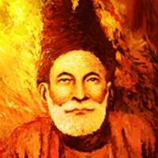

شاعری کی دنیا

شاعری کی دنیا

مرزا غالب
دل ناداں تجھے ہوا کیا ہے
آخر اس درد کی دوا کیا ہے
ہم ہیں مشتاق اور وہ بیزار
یا الٰہی یہ ماجرا کیا ہے
میں بھی منہ میں زبان رکھتا ہوں
کاش پوچھو کہ مدعا کیا ہے
جب کہ تجھ بن نہیں کوئی موجود
پھر یہ ہنگامہ اے خدا کیا ہے
یہ پری چہرہ لو گ کیسے ہیں
غمزہ و عشوہ و ادا کیا ہے
شکن زلف عنبریں کیوں ہے
نگہ چشم سرمہ سا کیا ہے
سبزہ و گل کہاں سے آئے ہیں
ابر کیا چیز ہے ہوا کیا ہے
ہم کو ان سے وفا کی ہے امید
جو نہیں جانتے وفا کیا ہے
ہاں بھلا کر ترا بھلا ہوگا
اور درویش کی صدا کیا ہے
جان تم پر نثار کرتا ہوں
میں نہیں جانتا دعا کیا ہے
میں نے مانا کہ کچھ نہیں غالبؔ
مفت ہاتھ آئے تو برا کیا ہے
یہ نہ تھی ہماری قسمت کہ وصال یار ہوتا
اگر اور جیتے رہتے یہی انتظار ہوتا
ترے وعدے پر جیے ہم تو یہ جان جھوٹ جانا
کہ خوشی سے مر نہ جاتے اگر اعتبار ہوتا
تری نازکی سے جانا کہ بندھا تھا عہد بودا
کبھی تو نہ توڑ سکتا اگر استوار ہوتا
کوئی میرے دل سے پوچھے ترے تیر نیم کش کو
یہ خلش کہاں سے ہوتی جو جگر کے پار ہوتا
یہ کہاں کی دوستی ہے کہ بنے ہیں دوست ناصح
کوئی چارہ ساز ہوتا کوئی غم گسار ہوتا
رگ سنگ سے ٹپکتا وہ لہو کہ پھر نہ تھمتا
جسے غم سمجھ رہے ہو یہ اگر شرار ہوتا
غم اگرچہ جاں گسل ہے پہ کہاں بچیں کہ دل ہے
غم عشق گر نہ ہوتا غم روزگار ہوتا
کہوں کس سے میں کہ کیا ہے شب غم بری بلا ہے
مجھے کیا برا تھا مرنا اگر ایک بار ہوتا
ہوئے مر کے ہم جو رسوا ہوئے کیوں نہ غرق دریا
نہ کبھی جنازہ اٹھتا نہ کہیں مزار ہوتا
اسے کون دیکھ سکتا کہ یگانہ ہے وہ یکتا
جو دوئی کی بو بھی ہوتی تو کہیں دو چار ہوتا
یہ مسائل تصوف یہ ترا بیان غالبؔ
تجھے ہم ولی سمجھتے جو نہ بادہ خوار ہوتا
ہزاروں خواہشیں ایسی کہ ہر خواہش پہ دم نکلے
بہت نکلے مرے ارمان لیکن پھر بھی کم نکلے
ڈرے کیوں میرا قاتل کیا رہے گا اس کی گردن پر
وہ خوں جو چشم تر سے عمر بھر یوں دم بدم نکلے
نکلنا خلد سے آدم کا سنتے آئے ہیں لیکن
بہت بے آبرو ہو کر ترے کوچے سے ہم نکلے
بھرم کھل جائے ظالم تیرے قامت کی درازی کا
اگر اس طرۂ پر پیچ و خم کا پیچ و خم نکلے
مگر لکھوائے کوئی اس کو خط تو ہم سے لکھوائے
ہوئی صبح اور گھر سے کان پر رکھ کر قلم نکلے
ہوئی اس دور میں منسوب مجھ سے بادہ آشامی
پھر آیا وہ زمانہ جو جہاں میں جام جم نکلے
ہوئی جن سے توقع خستگی کی داد پانے کی
وہ ہم سے بھی زیادہ خستۂ تیغ ستم نکلے
محبت میں نہیں ہے فرق جینے اور مرنے کا
اسی کو دیکھ کر جیتے ہیں جس کافر پہ دم نکلے
کہاں مے خانہ کا دروازہ غالبؔ اور کہاں واعظ
پر اتنا جانتے ہیں کل وہ جاتا تھا کہ ہم نکلے